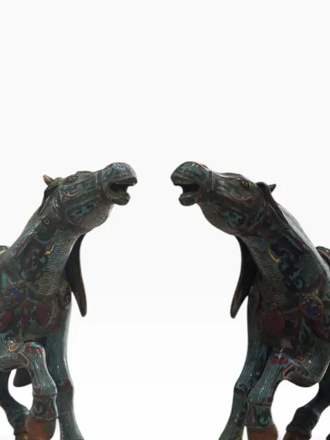
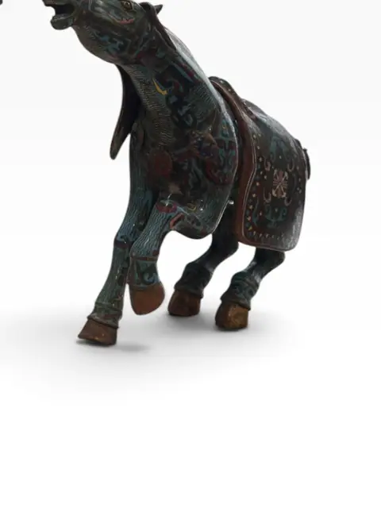
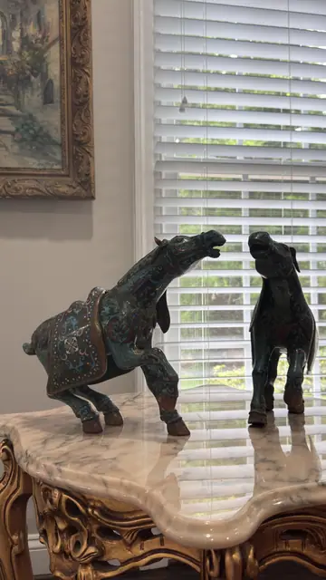
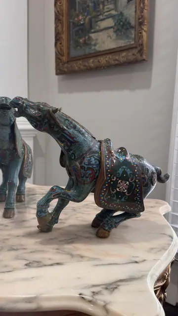
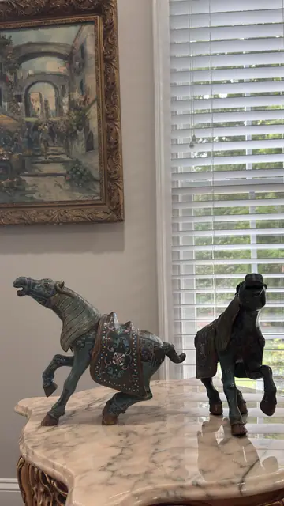
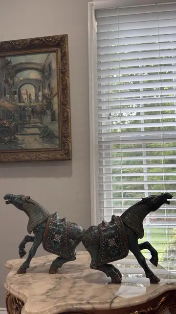
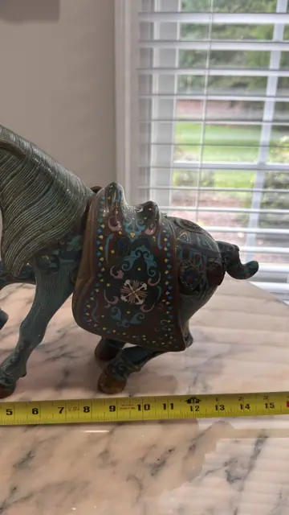
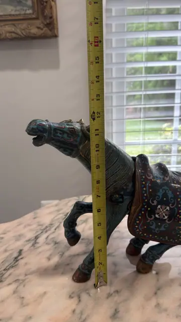
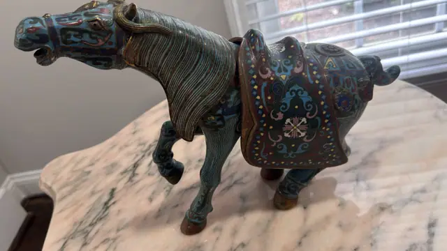
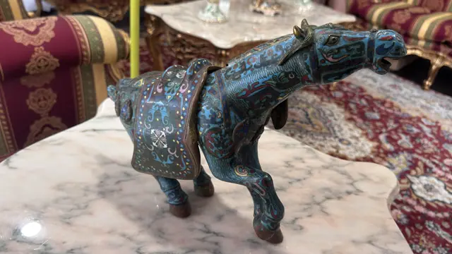

Sculpture
Pair of Chinese Cloisonné Enamel Tang-Style Horses
artist unknown (Chinese workshop production) · 20th century
Price Upon Request











About the Item
A decorative pair of Chinese cloisonné enamel horses in Tang-dynasty style, each caparisoned with a removable gilt-trimmed saddle and rendered in turquoise, cobalt, and crimson enamel with gilt wirework and hooves. Mid-to-late 20th-century workshop production, sold as a matched facing pair. Type confirmed against comparable auction listings (mid-20th c. cloisonné Tang-style horse pairs with removable saddles). No marks visible; no tape measurements in folder.
Details
- Creator:
- artist unknown (Chinese workshop production)
- Creation Year:
- 20th century
- Medium:
- Cloisonné enamel on metal with gilt details
- Period:
- 20Th
- Condition:
- Offered in the condition shown in the photographs.
- Reference Number:
- VO-368